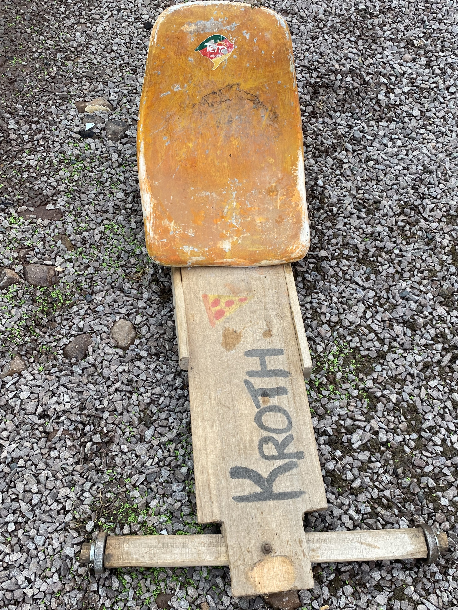

Informações
A parte matemática do processo serão as medidas. Ele terá entre 70-100cm, pesando em torno de 6-9kg (as medidas são estimativas)
carrinho
O desenvolvimento de carrinhos de rolimã em uma atividade do ensino médio do SENAC pode ter um impacto significativo nos aspectos socioambientais e tecnológicos. Primeiramente, do ponto de vista socioambiental, a construção desses carrinhos estimula a criatividade, o trabalho em equipe e o espírito empreendedor dos estudantes. Ao projetar e construir os carrinhos, os alunos aprendem a utilizar materiais recicláveis e reutilizáveis, promovendo a consciência ambiental e a redução de resíduos. Além disso, a atividade do carrinho de rolimã permite que os estudantes explorem conceitos de física, como a força, a velocidade e a resistência do ar, aprimorando suas habilidades técnicas e científicas. Eles podem aplicar princípios de mecânica, aerodinâmica e até mesmo eletrônica, caso desejem incorporar sistemas de controle e segurança ao carrinho. Em termos tecnológicos, a atividade do carrinho de rolimã no ensino médio do SENAC estimula o interesse dos alunos por ciência, tecnologia, engenharia e matemática (STEM). Eles são incentivados a utilizar ferramentas digitais, como softwares de modelagem 3D, para projetar seus carrinhos com precisão e explorar diferentes designs. Adicionalmente, o uso de sensores e dispositivos eletrônicos pode ser incorporado aos carrinhos de rolimã, permitindo a coleta de dados em tempo real durante as corridas. Isso abre oportunidades para os estudantes explorarem conceitos de internet das coisas (IoT) e análise de dados, contribuindo para o desenvolvimento de habilidades relevantes para o mundo tecnológico atual. Em suma, a atividade de desenvolvimento de carrinhos de rolimã no ensino médio do SENAC tem um impacto positivo em várias áreas. Promove a consciência ambiental, o trabalho em equipe e o empreendedorismo dos estudantes, além de estimular o interesse por STEM e a aplicação de conhecimentos tecnológicos. Essa atividade proporciona uma experiência prática e multidisciplinar, contribuindo para a formação integral dos alunos.